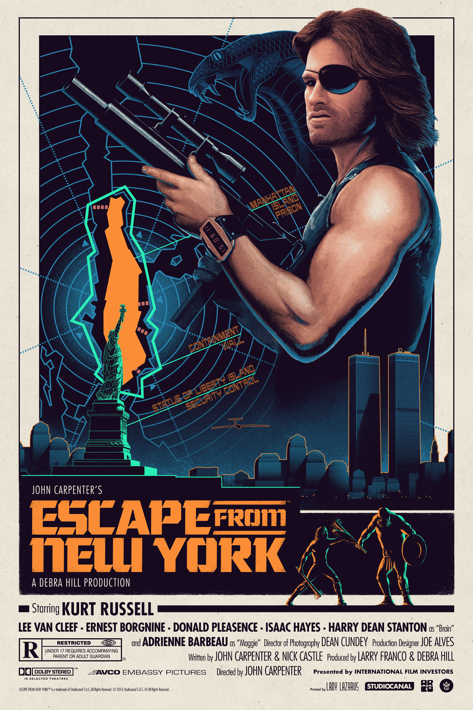

Escape from New York (stylized on-screen as John Carpenter's Escape from
New York) is a 1981 American science fiction action film co-written, co-scored and directed
by John Carpenter. It stars Kurt Russell, Lee Van Cleef, Donald Pleasence, Ernest Borgnine,
Isaac Hayes, Adrienne Barbeau, and Harry Dean Stanton.The film's storyline, set in the near-future world of 1997, concerns a
crime-ridden United States, which has converted Manhattan Island in New York City into the
country's maximum-security prison. Air Force One is hijacked by insurgents and is purposely
crashed in New York City. Ex-soldier and current federal prisoner Snake Plissken (Russell)
is given just 24 hours to go in and rescue the president of the United States, after which,
if successful, Snake will be pardoned.

Carpenter wrote the film in the mid-1970s in reaction to the Watergate scandal.
After the success of Halloween (1978), he had enough influence to begin production and filmed it
mainly in St. Louis, Missouri, on an estimated budget of $6 million. Debra Hill and Larry J.
Franco served as the producers. The film was co-written by Nick Castle, who had collaborated with
Carpenter by portraying Michael Myers in Halloween. Escape from New York was released in the United
States on July 10, 1981. The film received positive reviews from critics and was a commercial success,
grossing more than $25 million at the box office. The film was nominated for four Saturn Awards,
including Best Science Fiction Film and Best Direction. The film became a cult classic
and was followed by a sequel, Escape from L.A. (1996), which was also directed and written
by Carpenter and starred Russell, but was much less favorably received.